Руководство по Carino DICOM
Carino DICOM — это шлюз DICOM и устройство непрерывности работы: принимает исследования, маршрутизирует и пересылает их, отдаёт хранимое по Query/Retrieve и DICOMweb и позволяет отделению лучевой диагностики работать, когда PACS или РИС перестают отвечать. Это руководство охватывает развёртывание, повседневные задачи и то, что делать, когда они не получаются, модель безопасности, каждую службу и реальные пределы программы.
Все снимки экрана в этом руководстве сделаны с работающего экземпляра этой программы, а исследования на них придуманы для съёмки. Ни один пациент в руководстве не показан.
Содержание
1. Что это такое и какую роль играет
Carino DICOM стоит между оборудованием, которое создаёт изображения, и системами, которые их хранят или читают. Он не пытается заменить ваш архив; он пытается быть тем звеном, которое их связывает, и тем, что останется на ногах, когда упадёт что-то из остальных.
У него две роли, и различие между ними важно: именно оно определяет, какие службы вы включите.
- Постоянный шлюз. Принимает по C-STORE, раскладывает на диск по схеме пациент / исследование / серия, пересылает на одно или несколько назначений по правилам, обезличивает уходящую копию, когда его об этом просят, и отдаёт хранимое по Query/Retrieve (для старого оборудования) и DICOMweb (для современных просмотрщиков).
- Страховочная сеть. Если основной PACS перестал отвечать, он может поднять собственный Modality Worklist, чтобы лаборанты продолжали снимать, удержать всё, что придёт во время аварии, и переслать это, как только основной узел вернётся. Он также принимает заявки HL7 по MLLP — или введённые вручную, — когда из строя вышла РИС.
Всем управляет один config.json, и всё работает без графического интерфейса. Веб-панель
удобна, но не обязательна.
Порты по умолчанию
| Служба | Порт | Протокол |
|---|---|---|
| Приём (Storage SCP) | 11112 | DICOM / DIMSE |
| Виртуальная печать | 11113 | DICOM Print |
| Modality Worklist | 11114 | DICOM C-FIND |
| Запрос/выдача | 11115 | DICOM C-FIND/C-MOVE/C-GET |
| Аварийная РИС | 2575 | HL7 поверх MLLP |
| Панель + DICOMweb | 8042 | HTTP |
Почему 11112, а не 104. Зарегистрированный порт для DICOM — 104, а он
привилегированный в Linux и macOS и требует root. Значение по умолчанию этого избегает.
Настройте оборудование соответственно или пробросьте 104 на 11112 в
контейнере или на брандмауэре.
2. Начало работы
Выберите вариант развёртывания
| Вариант | Для чего подходит | Поднимается после отключения питания |
|---|---|---|
| Настольное приложение (в трее) | Рабочая станция, за которой кто-то сидит: один кабинет, одна клиника, пробный запуск. | Только с «запуском при входе» |
| Docker / Podman | Сервер или любая машина, где его нужно изолировать и переносить целиком. | Да (restart: unless-stopped) |
| Служба systemd | Постоянный ПК в углу отделения лучевой диагностики, где никто не входит в систему. | Да |
Настольное приложение
Скачайте пакет для вашей системы со страницы releases и откройте его. Оно сворачивается в системный трей; по клику открывается панель. Приложение пока не подписано цифровой подписью, поэтому Windows и macOS предупреждают при первом запуске — на главной странице есть точные шаги, как всё-таки его открыть.
При первом запуске оно один раз спрашивает, можно ли проверять на GitHub, не вышла ли более новая версия. Ответ «нет» — или просто закрытое окно вопроса — оставляет проверку выключенной, и так она настроена по умолчанию. Если она включена, новый релиз появляется строкой в меню трея и рядом с версией на панели Обзор; клик по любой из них открывает страницу релиза в вашем браузере. Ничего не скачивается и ничего не устанавливается само. Флажок Проверять обновления в меню трея включает и выключает это в любой момент, и есть он только в настольной сборке — в контейнерных и systemd-развёртываниях его нет.
Docker
git clone https://github.com/MiguelCarino/Carino-DICOM
cd Carino-DICOM
mkdir -p data
echo "PACS_UID=$(id -u)" >> .env
echo "PACS_GID=$(id -g)" >> .env
docker compose up -d --build
docker compose logs -f pacsПри первом запуске создаётся и печатается в журнал токен доступа. Откройте
http://127.0.0.1:8042/ и вставьте его, когда панель попросит. Всё — конфигурация,
исследования, журналы, индекс — лежит в ./data, и именно с него делается резервная
копия.
Самый частый сбой первого запуска — каталог ./data, принадлежащий root:
контейнер никогда не работает от root и падает с EACCES. Две строки
echo выше предотвращают это: образ собирается под вашу учётную запись; если вы их
пропустили, добавьте их и снова выполните docker compose up -d --build. На хостах с SELinux (Fedora, RHEL, Rocky) суффикс тома
:z — не украшение: без него в примонтированный каталог нельзя писать, хотя
владелец и права выглядят совершенно правильно.
Служба systemd (Linux)
git clone https://github.com/MiguelCarino/Carino-DICOM.git
cd Carino-DICOM
sudo packaging/systemd/install.shУстановщик создаёт системного пользователя carino-pacs, копирует код в
/opt/carino-pacs, готовит /var/lib/carino-pacs и ставит юнит…
но не запускает его. Это не недосмотр: запуск PACS открывает порты, принимающие
данные пациентов, и такое решение принимается после чтения конфигурации, а не до. Отредактируйте
/var/lib/carino-pacs/config.json, затем:
sudo systemctl enable --now carino-pacs
systemctl status carino-pacs
journalctl -u carino-pacs -fПовторный запуск установщика обновляет код на месте и никогда не трогает существующий
config.json.
Где лежат данные
| Вариант | Каталог |
|---|---|
| Настольное приложение / CLI | ~/CarinoDICOM/ (существующие установки сохраняют ~/CarinoPACS) |
| Docker | /data в контейнере → ./data на хосте |
| systemd | /var/lib/carino-pacs/ (режим 0750) |
config.json лежит вместе с данными, а не в /etc, потому что
относительные пути в конфигурации ("./received", "./logs",
"./index.db") отсчитываются от каталога, в котором лежит сам файл конфигурации.
Конфигурация в /etc разбросала бы исследования пациентов по /etc.
Первый запуск, по порядку
- Выберите службы. Всё поставляется выключенным. Окно выбора служб в панели спрашивает, что должна запускать эта машина; включите только это.
- Добавьте назначения (имя, хост, порт, AE title) на вкладке Назначения в разделе Конфигурация — именно этой вкладкой раздел и открывается.
- Проверьте связь, прежде чем передавать хотя бы одно изображение: нажмите
Echo в строке назначения. На машине без панели то же самое делает
./run.sh echo --name "Hospital PACS". Если echo не проходит, дело не в Carino — дело в сети, брандмауэре или AE title. - Направьте сюда один аппарат по строке Направьте модальность на на карточке приёма и отправьте тестовое исследование (см. Как сделать…).
- Следите за журналом — вкладка Журнал в разделе Активность. Если что-то не сработало, это появится там и на карточке службы как Последняя проблема; эта программа скорее закричит, чем тихо откажет.
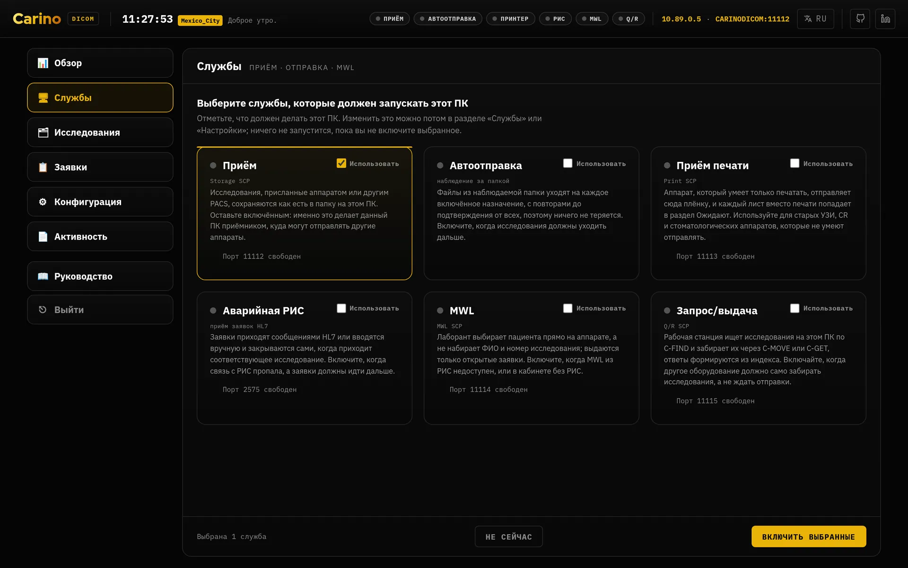
Без графического интерфейса
./run.sh init # создаёт config.json и его папки
./run.sh init --token # и генерирует web.auth_token
./run.sh serve # панель на http://127.0.0.1:8042
./run.sh receive # только приём
./run.sh send # только наблюдение за папкой / пересылка
./run.sh qr # только Запрос/выдача
./run.sh mwl # только рабочий список
./run.sh ris # только приём заявок HL7
./run.sh print # только виртуальная печать
./run.sh echo --host 10.0.0.5 --port 104 --aet REMOTEPACSКаждая команда принимает -c / --config <путь>. В Windows —
run.ps1.
3. Как сделать…
Короткие рецепты для задач, которые возникают в отделении. Каждый заканчивается тем, как понять, что всё получилось; если не получилось, следующая глава — список того, что проверить.
…направить аппарат сюда, чтобы он сохранял изображения
- Откройте Службы. Если карточка Приём говорит, что служба остановлена, нажмите Пуск.
- Прочитайте строку карточки Направьте модальность на: AE title, IP-адрес и порт (по
умолчанию
CARINODICOMи11112). Кнопка копирования рядом копирует все три. Если у машины несколько адресов, берите тот, что в сети аппарата. - На аппарате добавьте назначение для сохранения — производители называют его узлом DICOM, архивом, «Send to» или «Store» — с этими тремя значениями. Собственный AE title аппарата — это вызывающий AE; здесь его вводить не нужно.
- Если в Конфигурация → Настройки → Этот PACS в поле Принимать только эти AE перечислены AE title, добавьте туда AE title аппарата, иначе приём его отклонит.
- Запустите собственную проверку связи на аппарате (часто Verify или Echo), затем отправьте одно исследование. Оно появится в Исследования → История.
Кнопка Проверить на карточке проверяет приём с этой же машины. Если Проверить проходит, а аппарат всё равно не может отправить, проблема между ними: адрес, порт, брандмауэр или список разрешённых AE.
…направить аппарат сюда, чтобы он печатал
Для оборудования, единственный вывод которого — плёнка. Carino притворяется плёночным принтером и захватывает каждый лист, чтобы вы его идентифицировали; на бумагу ничего не печатается.
- Откройте Службы и нажмите Пуск на карточке Приём печати.
- Прочитайте её строку Направьте модальность на (по умолчанию
CARINOPRINT, IP этой машины и порт11113). - На аппарате добавьте принтер DICOM — его иногда называют лазерной камерой или плёночным принтером — с этими тремя значениями. Оттенки серого предлагаются всегда; если аппарат печатает только в цвете, отметьте Принимать также цветные задания печати в Конфигурация → Настройки → Печать.
- Нажмите Отправить тестовую печать на карточке. Через несколько секунд в Исследования → Ожидают появится лист с пометкой TEST PRINT — safe to discard. Это доказывает, что приём работает; отбросьте лист.
- Напечатайте одну плёнку с аппарата. Карточка покажет Последняя печать с числом плёнок, AE title аппарата и его адресом, счётчик Захвачено вырастет, а плёнка будет ждать в Ожидают, пока вы её не утвердите (см. ниже).
Сохранять каждую снятую плёнку как (в группе Печать) определяет, чем станет плёнка после утверждения. Многие архивы и просмотрщики хранят PDF, но не показывают его; выберите Изображение (Secondary Capture), если плёнку нужно читать на той стороне.
AE title принтера, набранный на аппарате, не проверяется: с опечаткой печать всё равно пройдёт. Фильтруется только собственный AE title аппарата, и только если заполнено Принимать только эти AE. Если печать не удалась, карточка показывает Последняя проблема; в таблице неполадок печати есть каждое сообщение и способ исправления.
…направить аппарат сюда, чтобы он забирал рабочий список
- Убедитесь, что заявки есть. Либо РИС шлёт заявки HL7 в службу Аварийная РИС (порт
2575), либо кто-то вводит их в Заявки → Новая заявка. - В Конфигурация → Модальности зарегистрируйте кабинет с точным AE title станции. Тогда адресат заявки выбирается из этого списка, а не набирается.
- Откройте Службы, нажмите Пуск на карточке MWL и прочитайте её строку
Направьте модальность на (по умолчанию
CARINOMWLи порт11114). - На аппарате укажите эти значения как поставщика рабочего списка (MWL, «HIS/RIS» или «worklist server») и выполните запрос.
Заявка без адресата видна на всех станциях; заявка с адресатом видна только на станции, чей AE title совпадает с ним в точности. Когда исследование возвращается, оно сопоставляется с заявкой по номеру исследования, и заявка закрывается сама.
…утвердить ожидающую плёнку
Снятые плёнки, а также PDF и изображения, найденные рядом с исследованием, ждут в Исследования → Ожидают. Счётчик 📎 рядом с Исследованиями показывает, сколько их.
- Откройте Просмотр и посмотрите на лист.
- Если у пациента есть открытая заявка, нажмите Сопоставить с заявкой… и выберите её. ФИО, ID пациента, номер исследования и само исследование берутся из заявки, а заявка закрывается как захваченная.
- Иначе введите данные сами. ID пациента и ФИО пациента обязательны; номер исследования, дату и описание очень желательно заполнить.
- Если элемент пришёл рядом с исследованием, а вы сменили пациента, выберите, к чему он относится: Прикрепить к исходному исследованию — только если это исследование действительно принадлежит этому пациенту, иначе Новое исследование. Неверный выбор положит лист одного пациента в исследование другого.
- Нажмите Утвердить. Элемент превращается в DICOM и пересылается, как любое другое исследование.
Отменить нельзя: после утверждения исходный файл исчезает из «Ожидают», а копия DICOM уже в пути. Ошибку исправляют в архиве. Отбросить убирает элемент, ничего не отправляя.
…исправить застрявшую пересылку
Откройте Исследования → Застряли (счётчик ⚠ рядом с Исследованиями). Строки сгруппированы по исследованию — с пациентом, номером исследования и описанием — и разложены на три вида:
- Повтор идёт автоматически — назначение отказало или не ответило. Прочитайте ошибку в строке: она говорит, отклонил ли нас удалённый узел (и почему, например «add CARINOSCU to the remote's allowed AE titles»), оборвал соединение или вовсе не ответил. Исправьте это, нажмите Echo в строке назначения в Конфигурация → Назначения, затем Повторить сейчас.
- Удержано — ничего не отправляется — удержание из-за обезличивания. Никакой таймер его не снимает; воспользуйтесь двумя кнопками в строке и см. Обезличивание при пересылке.
- Не осталось назначения для повтора — файлы направлены на назначение, которое удалили или выключили. Включите его снова, или нажмите Отправить на… и выберите другое назначение, или Убрать из очереди (спросит подтверждение), смирившись с потерей.
…узнать, почему что-то не сработало
- Посмотрите на карточку службы. Каждая служба показывает Последняя проблема, если что-то пошло не так; щёлкните по ней, чтобы открыть журнал, уже отфильтрованный по этой службе.
- На Активность → Журнал пользуйтесь кнопками служб (приём, отправка, печать, рабочий список, Q/R, РИС…), переключателем Только ошибки и предупреждения и текстовым фильтром — AE title, IP-адрес или номер исследования быстро сужают поиск.
- Чтобы передать проблему кому-то ещё, скопируйте видимые строки или скачайте журнал за целый день.
- Нажмите Проверить на карточке. Если проверка с этой машины проходит, а аппарат всё равно не может, смотрите на сеть между ними.
- Если изменилась настройка и никто не знает, кто её изменил, Активность → Аудит называет человека и разделы, которые он менял.
4. Когда что-то идёт не так
Сначала признак, затем где смотреть, затем как исправить. Почти каждая строка начинается в одних и тех же двух местах: карточка службы на панели Службы (её Последняя проблема) и Активность → Журнал.
Отправка, приём и рабочий список
| Признак | Где смотреть | Как исправить |
|---|---|---|
| Аппарат вообще не может отправить нам | Карточка «Приём»; строки журнала, начинающиеся
с Receiver: refused | its AE title is not in the allowed list:
добавьте AE аппарата в Принимать только эти AE или очистите список. В журнале ничего:
соединение так и не дошло — проверьте IP и порт на аппарате, брандмауэр и то, что служба на
карточке запущена. Проверить на карточке отделяет «эту машину» от «сети». |
| Аппарат отправил, но исследования нет в Истории | Журнал, кнопка приём; Свободно на Обзоре | Refused C-STORE — low disk space: освободите
место на диске или уменьшите scp.min_free_gb. Когда место появится, аппарат может
отправить заново. |
| Карточка янтарная: «Включена, но не работает» | Журнал в момент запуска | Её порт занят другой программой или другой службой здесь. Смените порт или остановите другую программу, затем Пуск. |
| Исследования не доходят до основного PACS | Исследования → Застряли | Ошибка в строке говорит, что сделал PACS: rejected permanently:
calling AE title not recognised → добавьте наш отправляющий AE (по умолчанию
CARINOSCU) на PACS; connection refused → неверный порт или PACS
остановлен; no reply → хост выключен или мешает брандмауэр; aborted
→ часто несовпадение TLS. |
| Одному назначению ничего не отправляется, и повторов нет | Застряли, раздел «Удержано» | Удержание из-за обезличивания — см. Обезличивание при пересылке. |
| Аппарат не видит свой рабочий список | Карточка «MWL»; журнал, кнопка рабочий список | MWL: refused: добавьте его AE в список разрешённых для рабочего
списка. Запроса в журнале нет: неверные IP/порт/AE на аппарате. Запрос приходит, а список пуст:
AE адресата заявки не совпадает со станцией в точности — исправьте его в
Модальностях. |
| Собственная РИС больницы не отдаёт аппарату его список | Конфигурация → Модальности → Проверить рабочий список | См. Проверка рабочего списка; ответы попадают в Активность → Проверки рабочего списка. |
| Заявки HL7 от РИС не появляются | Карточка «Аварийная РИС»; журнал, кнопка РИС | Проверьте, что РИС отправляет на этот IP и порт 2575 и что её
адрес есть в ris.allowed_hosts, если этот список задан. |
| Всех выкинуло из системы | — | Нормально после перезапуска: сессии намеренно хранятся только в памяти. Войдите снова. |
| Панель перестала отвечать или её числа не меняются | Перезагрузите страницу | Если
она не возвращается, движок не отвечает: проверьте, что служба или контейнер работает
(systemctl status carino-pacs, docker compose ps), и прочитайте его
журнал. |
Контейнер падает с EACCES | docker compose logs pacs | В
./data не может писать пользователь контейнера: задайте
PACS_UID/PACS_GID в .env и пересоберите (см. Docker
выше). |
| Почта при переключении включена, но никто её не получил | Конфигурация → Люди | Письма уходят профилям с адресом почты, а не по списку. См. Оповещения. |
Печать
Каждый отказ и сбой приёма печати — это строка в журнале (кнопка печать), она учитывается в Ошибках карточки и показывается как её Последняя проблема. Удачное задание показывается как Последняя печать.
| Строка журнала или признак | Что это значит | Как исправить |
|---|---|---|
Print: refused X @ ip — its AE title is not in the allowed list (…) | AE title аппарата нет в списке приёма печати. | Добавьте его в Печать → Принимать только эти AE или очистите список. |
Print: refused X @ ip — too many connections at once | Аппарат — или несколько — открыли больше соединений, чем приём принимает одновременно. | Дайте заданиям завершиться и напечатайте снова; если повторяется, печатайте по одному заданию. |
Print: X @ ip asked for Basic Color Print Management…, which this printer does not
offer | Аппарат хочет цвет, а цвет выключен. | Отметьте Принимать также цветные задания печати. Ошибкой не считается: аппарат, предлагающий оба варианта, печатает в оттенках серого. |
Print from X: nothing to print — no film was created first, … N film(s)
were created but no image was sent into them, … the film it named (…) was never
created here | Аппарат пропустил шаг последовательности печати. Ему ответили «пустая страница» (предупреждение, 0xB603). | Настройка или неисправность на стороне аппарата: проверьте конфигурацию его принтера (формат плёнки, число изображений) и напечатайте снова. |
Print: X sent an image for a box this printer never handed out (…); refused | Аппарат сослался на ячейку изображения из другого сеанса. | Начните печать на аппарате заново; если повторяется, сообщите об этом вместе со строкой журнала. |
Print: could not read image N from X (…); it is left blank on the film | Одно изображение пришло в формате пикселей, который приём не читает; остальной лист сохранён. | Измените настройки печати на аппарате (разрядность, цвет), если это возможно; иначе сообщите эту строку. |
Failed to render or queue the print job from X: … | Плёнка пришла, но её не удалось записать (статус 0x0110). | Проверьте свободное место на диске и то, что в папку
ожидающих (scu.pending_dir) можно писать. |
Другие строки, начинающиеся с Print: … | Переданные как есть сообщения самой библиотеки DICOM по этому соединению печати. | Читайте вместе с предыдущей строкой; если непонятно — сообщите. |
| В журнале вообще ничего | Соединение так и не дошло. | Служба на карточке
запущена (не янтарная)? Аппарат использует IP этой машины и порт 11113? Не мешает ли
брандмауэр? Отправить тестовую печать на карточке доказывает, что эта сторона в
порядке. |
Две вещи, которые причиной не являются: AE title принтера, набранный на аппарате (он не проверяется), и то, что аппарат оставляет номера сеанса плёнки и плёночного листа принтеру (если их нет, они создаются здесь). Presentation LUT принимается и игнорируется, а аппарат, который сначала запрашивает конфигурацию принтера, получает ответ.
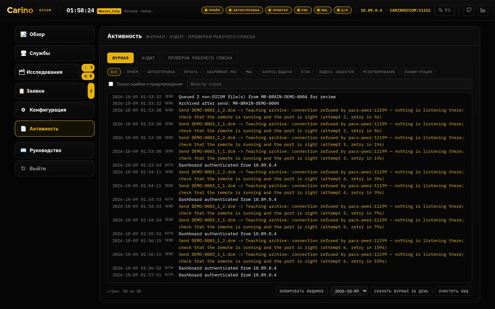
5. Модель безопасности и правило токена
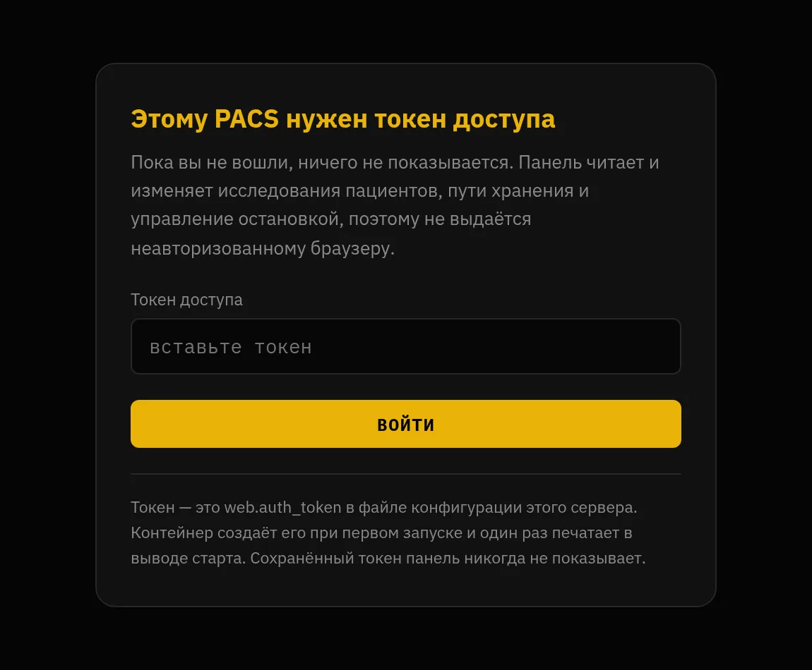
Начнём с главного: панель — это ключ от архива. Любой, кто её откроет, может прочитать каждое сохранённое исследование, скачать файлы DICOM, изменить любую настройку, запустить и остановить службы, удалить исследования и выключить сервер. Из коробки существует один общий секрет, и тот, у кого он есть, может всё — профили необязательны и выключены, пока вы их не включите. Как только вы это сделаете, каждый входит под собой — со своими разрешениями, со своим доступом к идентификаторам пациента и со своим именем в журнале аудита; общий токен продолжает работать как администратор, поэтому ничего из того, что уже им пользуется, не ломается.

*** везде, где оно появилось бы.Разрешения определяют и то, что панель рисует. Профиль видит только те разделы боковой панели и
только те вкладки внутри них, на которые у него есть разрешения: Рентгенолог, у которого есть
routing.read, но нет config.read, получает Конфигурацию с
Назначениями и Маршрутами и без вкладки Настройки, а Регистратура, не
имеющая ни одного из трёх, вообще не видит раздела Конфигурация. Индикаторы служб в
верхней шапке — намеренное исключение, см. Веб-панель ниже.
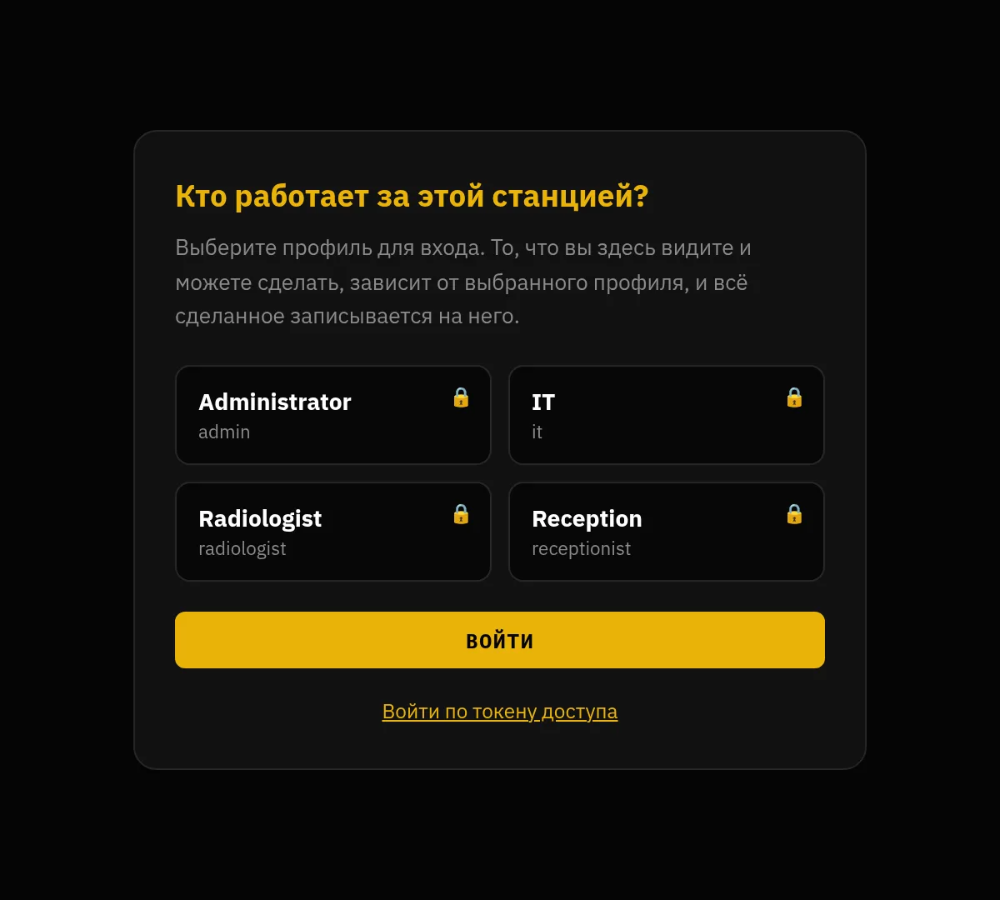
users.list_profiles: публиковать состав сотрудников для всех, кто дотянется до порта, — это реальное раскрытие, и решать вам. Токен по-прежнему работает, спрятанный ниже, потому что это путь обратно, когда кто-то закрыл себе вход.Правило
Пустой web.auth_token допустим, только пока web.host — это
петлевой адрес. Если web.host — что-либо другое: 0.0.0.0, адрес в
локальной сети, имя хоста — а токен пуст, сервер отказывается запускаться. Этот
отказ — свойство программы, а не ошибка, которую надо обойти.
Причина вполне конкретна. Без аутентификации на 127.0.0.1 контролем доступа служит
операционная система: до API дотянется только процесс на этой машине. Это оправданно. Но
web.host задаёт оператор, и в тот момент, когда кто-нибудь меняет его на
0.0.0.0, чтобы «зайти с другого ПК» — второпях, во вторник, не думая о безопасности, —
тот же API выдаёт любому соседу по локальной сети список исследований, пути хранения, байты DICOM
и /api/shutdown. Правило существует потому, что такое изменение занимает десять
секунд, а последствия остаются на годы.
Любой контейнер всегда находится именно в этом положении: контейнер по своей
природе публикует службу на 0.0.0.0. Поэтому образ при первом запуске создаёт
256-битный токен, если вы не задали свой, — и печатает его. А вот молча он токен не
создаёт никогда: секрет, которого никто не видел, — это секрет, который никто не меняет.
Создание и предъявление токена
./run.sh init --token # записывает его в config.json
python3 -c "import secrets; print(secrets.token_urlsafe(32))"
openssl rand -base64 32Сервер принимает учётные данные тремя способами:
Authorization: Bearer <token>X-Carino-Token: <token>- сессионный файл cookie, выданный
POST /api/login
Файл cookie существует для того, чтобы панель спрашивала токен один раз вместо того, чтобы держать его в JavaScript, где его прочитает любой XSS и любое расширение браузера. Он никогда не несёт сам токен: он несёт HMAC по секрету, созданному при старте и хранимому только в памяти. Поэтому перезапуск завершает все сессии — верный компромисс для устройства с одним оператором: никакого хранилища сессий на диске, нечему утечь, а в худшем случае токен придётся ввести заново раз в смену.
Панель говорит по обычному HTTP. Встроенного TLS для веб-уровня нет. Если вы открываете её за пределы петлевого адреса, поставьте перед ней обратный прокси, который завершает HTTPS. Токен, переданный по открытому HTTP в общей сети, — это токен, который вы отдали.
Сторона DICOM
allowed_aets— список разрешённых вызывающих AE title. Пустой означает «принимать любого». Это полезный фильтр, а не аутентификация: DICOM не проверяет подлинность вызывающей стороны.- DICOM-TLS — доступен с обеих сторон независимо, включая взаимный TLS с
клиентским сертификатом. Используется тот же порт: незашифрованная сторона не
договорится с приёмником по TLS, и наоборот. TLS шифрует и аутентифицирует транспорт, а
не приложение — для настоящего контроля доступа сочетайте его с
allowed_aetsили клиентскими сертификатами. - Брандмауэр — службы DICOM по умолчанию слушают на
0.0.0.0(хотя ни одна не работает, пока вы её не включите). Для того, до чего должны дотягиваться аппараты, это правильно, а значит, ограничить их подсетью аппаратов — ваша задача.
Что эта модель не защищает
- Профили выключены, пока вы их не включите. До этого на всё устройство один общий секрет и никаких учётных записей, ролей и разрешений. Так и остаётся по умолчанию, потому что молчаливое включение при обновлении сломало бы каждого машинного клиента на площадке.
- Нет интеграции со службой каталогов. Учётные записи живут на самом устройстве. Нет ни LDAP, ни Active Directory, ни единого входа, ни способа централизованно отключить человека, когда он уходит.
- Журнал аудита можно обрезать. Он ловит запись, изменённую на месте, изъятую из середины, переставленные записи и файл, оборванный посреди строки, — каждое из этого ломает хеш, и Проверить целостность называет запись и причину. Он не поймает удаление нескольких последних записей, потому что оставшееся — по-настоящему корректная цепочка, и он не остановит полную перезапись тем, у кого есть доступ на запись в папку аудита. Если вам нужна неотказуемость, скопируйте вершину цепочки туда, куда эта машина писать не может, и сравните позже.
- Шифрования на диске нет. Исследования — это обычные файлы DICOM, индекс
sqlite хранит имена и идентификаторы в открытом виде, заявки — это JSON, а
config.jsonсодержит токен открытым текстом. Шифруйте том под ними (LUKS, BitLocker, FileVault) и ограничьте права на каталог данных. - У приёмника HL7/MLLP нет ни TLS, ни учётных данных. Это сокет TCP с
обрамлением MLLP. Его единственный контроль —
allowed_hosts, проверка адреса подключающейся стороны, а такой адрес можно подделать. Любой, кто может открыть соединение с этим портом, может внедрить заявки, которые появятся в рабочем списке. Держите его в доверенном клиническом сегменте и закройте брандмауэром. - Обезличивание не трогает пиксели. См. эту службу ниже: впечатанные в изображение данные пациента переживают любой профиль.
Резервные копии. Индекс sqlite — это кеш, и он восстанавливается сам; изображения — нет. Делайте резервные копии каталогов хранения — и хотя бы раз проверьте восстановление.
Никакой телеметрии — с одним исключением, которое включаете вы сами. Движок никуда ничего не отправляет: ни аналитики, ни отчётов о сбоях, ни счётчиков использования, ни сторонних скриптов, подгружаемых во время работы. Его единственные исходящие соединения — это ассоциации DICOM и подтверждения HL7, которые вы настроили, к названным вами узлам, и развёртывание в Docker, Podman или systemd — это ровно оно и ничего сверх того, пока администратор не включит описанную ниже проверку версии. Именно эта фраза здесь и важна: такая машина и стоит в отделении лучевой диагностики с данными пациентов на ней. Настольное приложение вдобавок умеет проверять, вышла ли более новая версия, — но только если вы ответили «да» на вопрос, который оно задаёт один раз, при первом запуске; по умолчанию проверка выключена, и в меню трея её можно выключить снова. Эта проверка — один HTTPS-запрос в сутки к списку релизов на GitHub, с заголовком User-Agent и ничем больше: без идентификаторов, без счётчиков, без конфигурации, без данных пациентов. Поэтому GitHub узнаёт IP-адрес этой машины и примерное время запуска приложения — и это всё. Ничего не скачивается и ничего не устанавливается само. Панель предлагает ту же проверку с самого сервера — для развёртываний без настольного приложения: она выключена, пока администратор не включит её кнопкой рядом с версией в Обзоре или в Настройки → Интеграции; отправляется ровно тот же запрос, с сервера, а не из вашего браузера; после этого Обзор показывает, актуальна ли эта версия, с кнопкой «Обновить», открывающей этот сайт. Изменение, которое отправляло бы больше этого или отправляло бы то, на что никто не соглашался, считалось бы уязвимостью.

6. Службы, одна за другой
Всё, что открывает порт, поставляется выключенным. Правильный вопрос не «что оно умеет?», а «что должна делать эта машина?». Каждая включённая служба — это ещё один открытый порт. Индекс ниже — единственное исключение: он запускается сам, потому что это локальный кеш sqlite, который ничего не слушает.
У каждой службы один выключатель. Пуск на её карточке запускает её и оставляет включённой после перезапуска; Стоп сначала спрашивает, затем останавливает её и оставляет выключенной. В Конфигурация → Настройки тот же выключатель — это флажок Запускать эту службу (и при старте), поэтому карточка и настройка никогда не расходятся. Сохранение настроек перезапускает только те службы, чьи собственные настройки изменились, и панель говорит, какие именно.
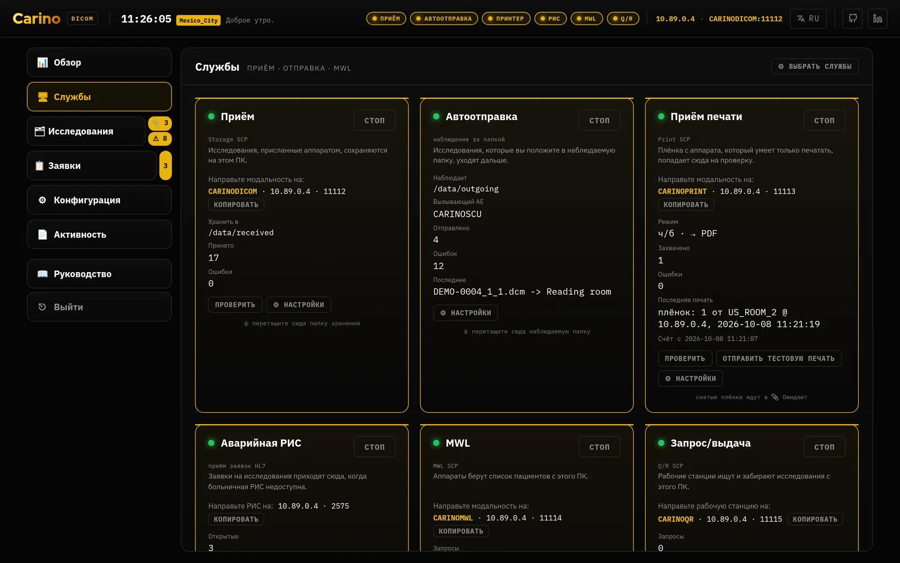
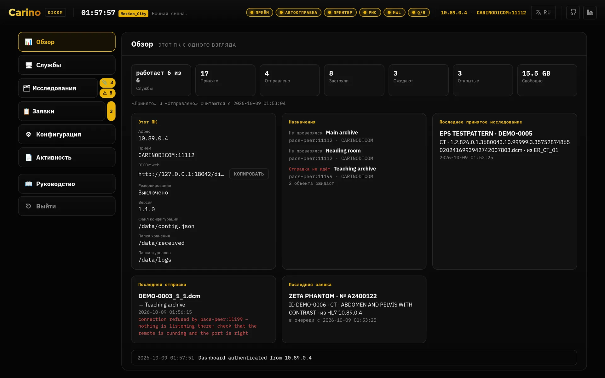
Приём — Storage SCP
Порт 11112 · C-STORE, C-ECHO
- Что делает
- Принимает исследования, которые присылают аппараты, и раскладывает их на диск — при желании по схеме пациент / исследование / серия. Он принимает все синтаксисы передачи и сохраняет сжатые объекты как есть — без перекодирования, поэтому по пути внутрь ничего не меняется.
- Включайте, когда
- Сюда что-либо должно отправлять изображения: аппараты, другой PACS, рабочая станция. Это основная служба.
- Оставьте выключенным, когда
- Эта машина только пересылает то, что кто-то другой кладёт в папку.
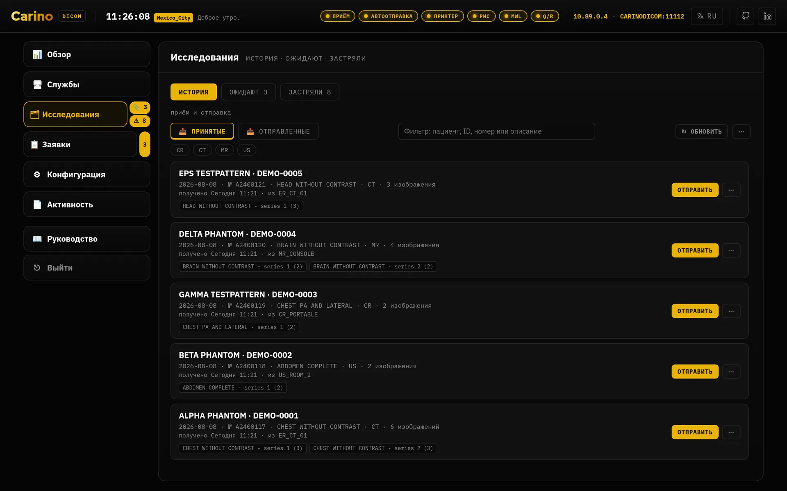
Автоотправка — Storage SCU и правила маршрутизации
Исходящий клиент · C-STORE
- Что делает
- Наблюдает за папкой и пересылает каждый новый файл на те назначения, которые подходят. Файл уходит, только когда он стабилен (размер не изменился между двумя сканированиями), поэтому недописанный файл никогда не пересылается. Прогресс отслеживается по каждому назначению: файл считается обработанным, только когда его приняло каждое включённое назначение, а отправка на недоступные узлы повторяется на следующем сканировании. При успехе оригинал можно оставить, переместить или удалить.
- Правила
- При включённой маршрутизации правило выбирает назначения по модальности, вызывающему AE
title, станции, ID пациента или описанию исследования (шаблоны
*и?, без учёта регистра). Например: CT изER_*— в учебный архив, обезличенно. - Гарантия
- Исследование никогда не может остаться неотправленным. Маршрутизация выключена, ни одно правило не совпало, заголовок не читается, правило называет назначение, которого больше нет, — в каждом из этих случаев файл уходит на все включённые назначения. Лишняя отправка раздражает оператора; недостаточная теряет изображение.
- Единственное исключение
- Правило, которое требует обезличивания для назначения, когда очистку выполнить нельзя,
удерживает это назначение: ему не отправляется ничего, вместо того чтобы
отправить с данными пациента. Очистке мешают две вещи — профиль в состоянии
offили профиль включён, но из настроек не удаётся построить деидентификатор, — и исправляются они по-разному. Ничего не теряется ни в том, ни в другом случае; см. Обезличивание при пересылке ниже. - Включайте, когда
- Эта машина должна доставлять изображения дальше: в центральный PACS, на рабочую станцию врача или копиями в учебный архив.
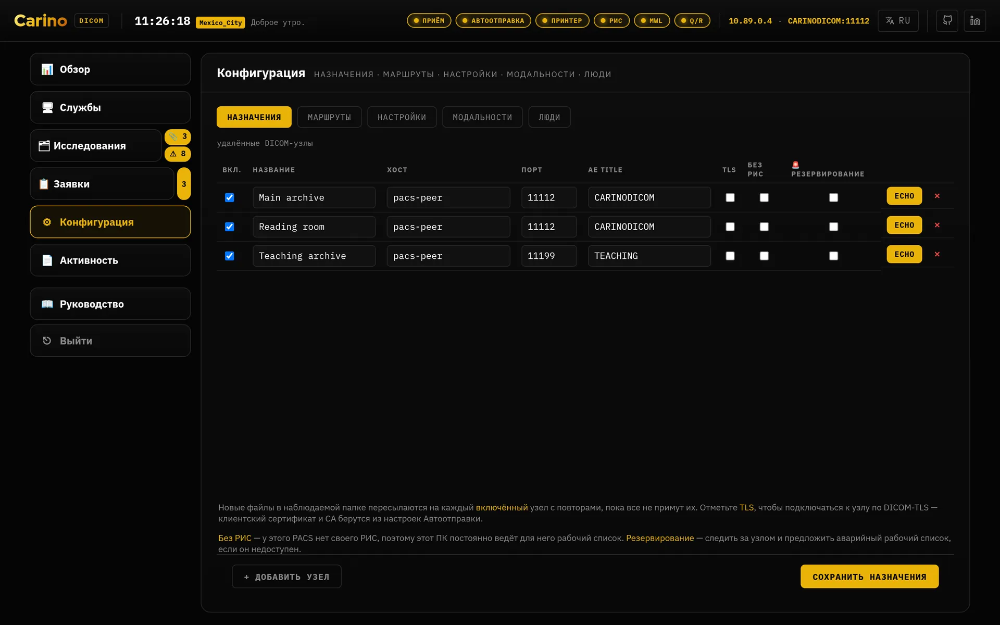
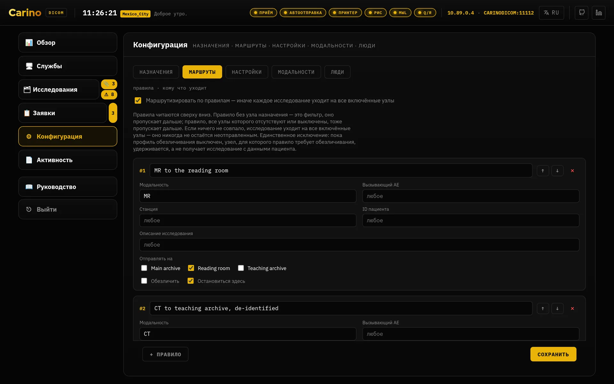
![Вкладка Застряли раздела Исследований под баннером «8 файлов требуют внимания», разделённая надвое: «Повтор идёт автоматически» — с учебным архивом, двумя ожидающими объектами исследования CR, его последней ошибкой красным, кнопкой «Повторить сейчас» и обратным отсчётом до следующей попытки; и «Удержано — ничего не отправляется» — с учебным архивом, помеченным «профиль выключен», шестью ожидающими объектами исследования CT под его пациентом и номером исследования, правкой, которая их освободит, кнопками «Настройки обезличивания» и «Правило, которое этого требует», а также «Отправить на…» и «Убрать из очереди».](../img/ru/stuck.webp)
Обезличивание при пересылке
Профиль PS3.15 Annex E · применяется только к уходящей копии
- Что делает
- Применяет Basic Application Level Confidentiality Profile к отправляемому объекту и
записывает в
(0012,0064), какие именно опции сохранения были использованы, чтобы получатель видел, что осталось. Сохранённый оригинал никогда не переписывается — в этой асимметрии вся суть. - Профили
basicсохраняет даты (полностью или со сдвигом), характеристики пациента, сведения об устройстве и об учреждении.strictубирает сведения об устройстве и учреждении и удаляет частные атрибуты, даже если вы просили их сохранить.- Включайте, когда
- Изображения покидают клиническую среду: обучение, научная работа, поставщик, внешнее второе мнение.
- Выключение
- Профиль решает, происходит ли очистка вообще; отметка Обезличить у правила решает,
какие назначения получат очищенную копию. Поставьте профиль в
off, пока правило всё ещё этого требует, — и Carino удержит это назначение, а не отправит копию с данными пациента на узел, владельцу которого сказали, что таких данных он не получает.
Удержано, а не отправлено, — и это ответ, когда исследования перестают двигаться. Назначение, для которого правило требует обезличивания, не получает ничего всякий раз, когда очистку выполнить нельзя. Доставка откладывается, личность не раскрывается: исследование, ждущее на диске, освобождается одной правкой, а имя, дошедшее до внешнего узла, никакой правкой не вернуть.
Очистка не может произойти по двум причинам, и исправляются они по-разному. Каждое удержание записывает, какая именно это причина, и вкладка Застряли раздела Исследований показывает способ исправления именно для записанной причины, а не гадает:
- Профиль в состоянии
off, а правило всё ещё требует очистки. Поставьте профиль вbasicилиstrict— и следующий проход автоотправки их освободит. - Профиль включён, но из текущих настроек не удалось построить деидентификатор, поэтому очищать по-прежнему нечем. Ошибка, которая этому помешала, есть на вкладке Журнал раздела Активность, на канале отправки, — исправьте её. Выключение профиля это не освободит: оно не освобождает ничего и лишь меняет то, какая из двух половин мешает очистке.
Снятая у правила отметка Обезличить освобождает любое из этих удержаний — и освобождает исследования с данными пациента, то есть даёт ровно тот исход, ради предотвращения которого удержание и существует. Делайте эту правку, только если это назначение действительно больше не должно получать очищенные данные.
Какая бы из этих правок ни была верной, до неё один клик из строки, которая сообщает об удержании. В каждой удержанной строке есть кнопка Настройки обезличивания, открывающая вкладку Настройки раздела Конфигурация, и кнопка Правило, которое этого требует, открывающая вкладку Маршруты. Обе только открывают вкладку и не более: ни одна не прокручивает до правила, требующего очистки, и ни одна его не подсвечивает. И всё же строка, называющая проблему, ведёт в оба места, где она чинится, поэтому починка короче, чем была, когда каждое из них надо было искать в боковой панели.
Ничего не теряется, и молчания об этом нет. Исследования остаются в папке исходящих — не архивируются и не удаляются, — каждое другое назначение того же исследования всё равно их получает, вкладка Журнал раздела Активность поднимает ошибку с именем исследования, удержанного назначения и причины, набор полей обезличивания на вкладке Настройки тоже её называет, а значок ⚠ рядом с разделом Исследований считает эти файлы — и сам этот значок является кнопкой, открывающей вкладку Застряли. Само по себе удержание не снимается ничем: таймер его не отсчитывает, и никто его не повторяет.
Пиксели не очищаются. Данные пациента, впечатанные в изображение, — надпись, которую УЗИ или вторичный захват печатает внутри кадра, — переживают любой профиль, и именно так «анонимизированные» данные чаще всего уходят из больницы с именем. Опция Clean Pixel Data (113101) намеренно не заявлена, потому что она не выполняется. Внутри программы ничто не может обнаружить эту утечку за вас: изображения должен посмотреть человек. Текст внутри структурированных отчётов также не читается.
Индекс
sqlite · index.db
- Что делает
- Держит по одной записи на сохранённый файл и выводит из них ответы о пациенте, исследовании и серии, поэтому сводка исследования никогда не разойдётся с объектами, которые она сводит. Это слой запросов, стоящий за Запросом/выдачей и DICOMweb.
- Включайте, когда
- Вы пользуетесь Запросом/выдачей или DICOMweb. Это их единственная зависимость.
- Что гарантирует
- Индекс — это кеш, а не источник истины. Его потеря стоит пересканирования, но никогда — изображения.
Запрос/выдача — C-FIND, C-MOVE, C-GET
Порт 11115 · Patient Root и Study Root
- Что делает
- Позволяет другой системе спросить «какие исследования у вас есть по этому пациенту?», а затем «пришлите их мне / вон на ту рабочую станцию». Это та половина PACS, с которой старое оборудование действительно умеет разговаривать: УЗИ 2009 года или считыватель CR никогда не заговорит на DICOMweb, но на DIMSE — говорит.
- Включайте, когда
- Рабочие станции или аппараты должны забирать исследования отсюда, или вы выступаете временным архивом на время аварии основного PACS.
- Что гарантирует
- C-MOVE никогда не выдумывает список объектов — он разрешает его через индекс. Всё, о чём индекс знает, но что не читается с диска, засчитывается как неудавшаяся подоперация и называется в Failed SOP Instance UID List. Это никогда не замалчивается: C-MOVE, который отчитывается об успехе, отправив меньше изображений, чем нашёл, — худший отказ, какой эта программа может допустить.
DICOMweb — QIDO-RS, WADO-RS, STOW-RS
HTTP, по пути /dicom-web на порту панели
- Что делает
- Позволяет современным просмотрщикам (OHIF, Weasis и подобным) запрашивать, получать и сохранять по HTTP, не договариваясь об ассоциации DICOM. Загрузка по STOW-RS проходит через ту же раскладку, что и C-STORE, поэтому исследование, отправленное просмотрщиком, неотличимо от присланного аппаратом.
- Включайте, когда
- Вам нужен веб-просмотрщик поверх архива. Помните, что токен защищает и эти маршруты.
- CORS
cors_originsсверяется точно (схема + хост + порт) и по умолчанию пуст, поэтому источнику не из списка ничего не отражается. Синтаксиса шаблонов нет — но буквальная*принимается, и только потому, что вы её набрали: с этого момента отражается любой источник, и любая страница, которую откроет оператор, сможет прочитать архив с этой машины. Лучше назовите просмотрщик.- Чего не делает
/rendered,/thumbnail, bulkdata URI и перекодирование между синтаксисами передачи не реализованы и отвечают406. Наполовину работающий просмотрщик хуже отсутствующей возможности: то, что не может быть получено, никогда не подделывается.
Modality Worklist (MWL)
Порт 11114 · C-FIND рабочего списка
- Что делает
- Выдаёт заявки аппаратам, чтобы лаборант не набирал данные пациента вручную. В каждой заявке есть заранее созданный Study Instance UID, который записывается в исследование, поэтому вернувшееся с аппарата исследование сопоставляется со своей заявкой точно. Поле AE целевого аппарата направляет заявку на одну станцию; пустое означает, что её видят все станции.
- Включайте, когда
- РИС не доводит заявки до аппаратов: потому что она недоступна, потому что на площадке РИС просто нет, или чтобы проверить поток РИС→PACS без живой РИС.
Зарегистрированные модальности
Без порта · Конфигурация → Модальности
- Что делает
- Список кабинетов, которые обслуживает этот узел: имя, понятное человеку, AE title станции, который рабочий список сверяет посимвольно, код модальности и, если нужно, имя станции. Это не список разрешений: аппарату не обязательно быть здесь, чтобы отправлять снимки, и его присутствие здесь ничего ему не разрешает. Выигрыш в том, что адресат заявки выбирается из списка, а не набирается руками, и что именно отсюда проверка рабочего списка одалживает AE title.
- Заполняйте, когда
- Вы раздаёте рабочий список или вводите заявки вручную. Пока не зарегистрирована ни одна станция, адресат заявки набирается руками, и опечатку нечем поймать.
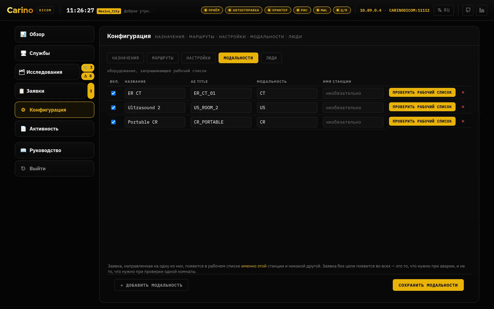
Проверка рабочего списка — спросить чужую РИС
Исходящий клиент · C-FIND рабочего списка · Конфигурация → Модальности
- Что делает
- Отвечает на вопрос «почему этот аппарат не видит свой список», не трогая сам аппарат. Задайте адрес настоящей больничной РИС — или её брокера — в Настройках и нажмите Проверить рабочий список в строке модальности: Carino задаёт этой РИС тот вопрос, который задала бы сама модальность, её же AE title, и складывает каждый ответ в Активность → Проверки рабочего списка. Один прогон задаёт один и тот же вопрос пять раз, снимая по одному ключу — станция, дата и модальность; затем без модальности; без даты; без станции, — потому что место неисправности показывает именно разница между ответами. Не вернулось ничего ни на один — у чужой РИС попросту нет записей; пустым вернулся только самый узкий — неверен AE title станции.
- Прежде чем нажать
- Сначала снимите модальность с сети. Проверка обращается как эта модальность, а две вещи, отвечающие на один AE title в одной РИС, — это путаница, которую потом придётся идти и разбирать.
- Чего не делает
- Это не служба, не расписание и не очередь. Во вкладке Проверки рабочего списка лежит запись о том, что ответил кто-то другой: эти заявки никогда не раздаются в собственном рабочем списке этого узла, и он ни на одну из них не претендует. Очистить опустошает эту запись и только её.
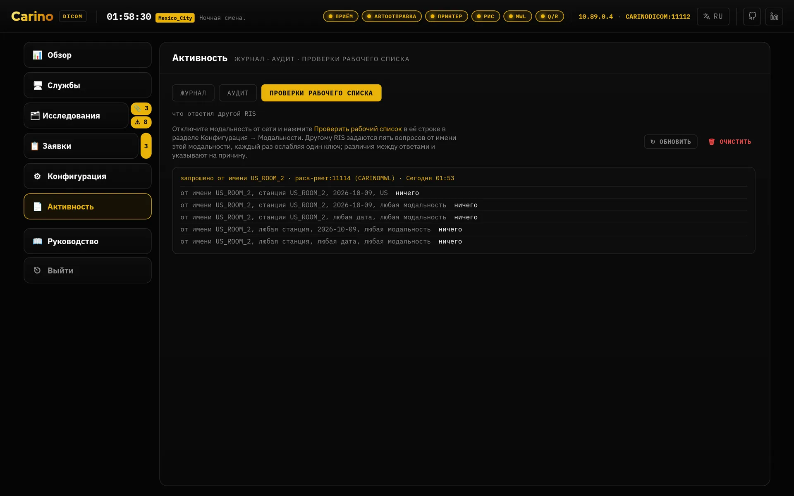
Аварийная РИС — заявки HL7
Порт 2575 · HL7 ORM^O01 поверх MLLP
- Что делает
- Принимает заявки HL7 по MLLP, а также позволяет вводить их вручную в панели, когда выше по цепочке ничего живого не осталось. Когда исследование возвращается по C-STORE, оно сопоставляется со своей заявкой по номеру исследования (запасной вариант — ID пациента), и заявка закрывается и уходит в архив для аудита — но не стирается.
- Включайте, когда
- РИС недоступна или вы проверяете интеграцию.
- Что гарантирует
- Доставка изображений никогда не зависит от совпадения с заявкой. Исследование без подходящей заявки всё равно сохраняется и пересылается; заявка просто остаётся открытой для ручного сопоставления.
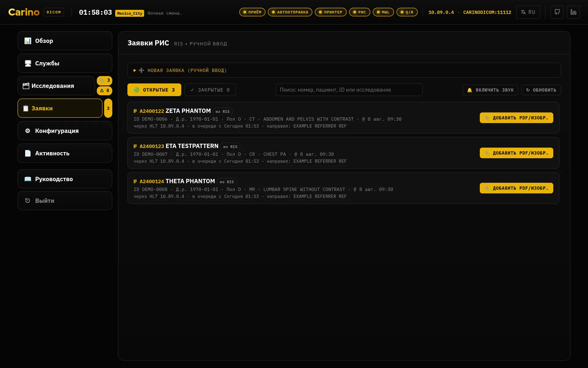
Ни TLS, ни учётных данных. См. раздел о безопасности: любой, кто может открыть сокет на этот порт, может внедрить заявки. Доверенная клиническая сеть и брандмауэр — или совсем не включать.
Аварийное переключение
Наблюдение по C-ECHO за назначением, помеченным основным
- Что делает
- Пометьте назначение основным и включите наблюдение: Carino периодически шлёт ему C-ECHO и следит за неудачами пересылки. Если он остаётся недоступным дольше порога, вы получаете предложение включить аварийную РИС. Включение запускает локальный рабочий список, чтобы лаборанты продолжали снимать, удерживает каждое исследование, принятое во время аварии, и пересылает его, как только основной узел вернётся. Когда выходить из режима — решаете вы.
- Включайте, когда
- Эта машина — шлюз к PACS, от которого вы зависите. Именно поэтому слово «непрерывность» стоит в первой строке этого руководства.
Оповещения — webhook и почта
Только исходящие · HTTP webhook, SMTP
- Что делает
- Достаёт до тех, у кого панель не открыта. Плашки на экране хватает тому, кто и так смотрит на передачу, и она бесполезна ровно в том случае, ради которого всё это есть: основной узел падает в 03:00, а дежурный рентгенолог не сидит ни перед каким экраном. Два канала, независимые друг от друга, и оба мертвы, пока не включён общий рубильник.
- Что отправляет
- Только события переключения: сработало, включено, восстановлено. Никакая другая часть узла оповещений не порождает. Это не система оповещений общего назначения и не становится ею оттого, что её включили.
- Кому приходит почта
- Профилям, а не адресам. Письмо уходит каждому включённому профилю, который указан в оповещениях переключения и у которого заполнен адрес почты. Настроенный SMTP без единого адреса ни в одном профиле не отправляет ничего и молча — это первое, что стоит проверить, когда «почта включена, а никого не предупредили». Формулировки зависят от роли, а адрес отказавшего назначения попадает в письмо только тому, кому и так позволено видеть таблицу назначений: письмо уходит за пределы здания, и отозвать его нельзя.
- Чего не сделает никогда
- Не задержит и не сломает то, о чём сообщает. Каждая отправка передаётся рабочему потоку, очередь ограничена — самое старое отбрасывается, и отброшенное считается, потому что «основной узел лежит», доставленное после восстановления, хуже молчания, — а сбой становится счётчиком и строкой журнала, а не исключением. Отправлено, не удалось, отброшено, в очереди и последняя ошибка — всё это можно прочитать, поэтому «включено и ни разу ничего не доставило» видно до той аварии, которая на это рассчитывает. Проверяйте спокойным днём, а не во время аварии.
- Где настраивается
- Пока не в панели: в разделе
notifyфайлаconfig.json(URL webhook, сервер SMTP и общий рубильникnotify.enabled). Секрет webhook и пароль SMTP задаются черезPOST /api/notify/secret, а не руками в файле. Каждый ключ описан в CONFIGURATION.md.
Виртуальная печать
Порт 11113 · DICOM Print, вывод в PDF или Secondary Capture
- Что делает
- Представляется принтером DICOM (по умолчанию AE title
CARINOPRINT) и захватывает каждый присланный лист плёнки. Для оборудования, единственный вывод которого — плёнка, это способ сохранить хоть что-то, что можно подшить. Надёжных данных пациента плёнка не несёт, поэтому каждая ждёт в Ожидают, пока человек её не идентифицирует; ничего напечатанное само дальше не уходит. - Включайте, когда
- У вас есть аппарат, умеющий только печатать, чей вывод вы хотите спасти. Шаги — в Как сделать… печать.
- Настройки
- В Конфигурация → Настройки → Печать: AE title и порт, Принимать только эти AE (аппараты, которым разрешено печатать; пусто — любые), Принимать также цветные задания печати и Сохранять каждую снятую плёнку как PDF или изображение. Выбирайте изображение, когда принимающий PACS или просмотрщик не показывает PDF, — а многие не показывают.
- Как понять, что работает
- Отправить тестовую печать на карточке прогоняет через приём целое задание печати и кладёт в Ожидают лист с пометкой «TEST PRINT — safe to discard». После настоящего задания карточка показывает Последняя печать (сколько плёнок, с какого AE и адреса) и счётчик Захвачено. Отказ или сбой показывается как Последняя проблема; см. таблицу неполадок печати.
- Что допускает
- Аппараты, оставляющие номера сеанса плёнки и плёночного листа принтеру, Presentation LUT (принимается и игнорируется) и AE title принтера, набранный на аппарате иначе: вызываемый AE не проверяется.
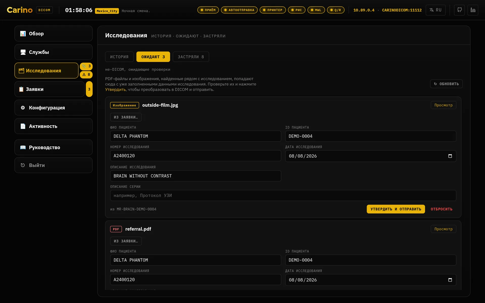
Веб-панель
Порт 8042 · HTTP, по умолчанию 127.0.0.1
- Что делает
- Состояние каждой службы, назначения, заявки, живой журнал активности, настройки и встроенный редактор DICOM. Всё, что делает панель, есть и в CLI.
- Как ориентироваться
- В боковой панели шесть разделов: Обзор, Службы, Исследований,
Заявки, Конфигурация и Активность — и седьмой, Тестовый узел,
только в процессе, запущенном с
--dev-peer. Три вопроса, задаваемые одной и той же куче файлов, — это вкладки раздела Исследований: История, Ожидают и Застряли; то, что задаётся при вводе машины в работу, — это вкладки Конфигурации: Назначения, Маршруты, Настройки, Модальности и Люди, и открывается она на Назначениях, а не на Настройках; а три записи — это вкладки Активности: Журнал, Аудит и Проверки рабочего списка, последняя — то, что ответила чужая РИС, когда этот узел спросил её как одну из ваших модальностей. У Заявок своя полоса открытых и закрытых. Раздел Исследований несёт два счётчика, которые сами по себе являются кнопками, 📎 ожидающих и ⚠ застрявших, и каждый открывает свою вкладку: поэтому попасть в Застряли — один клик, пока что-то застряло, и два (раздел, затем вкладка), когда не застряло ничего, потому что нулевой счётчик прячется. Счётчик, постоянно показывающий 0, — это вечно включённая сигнализация, а на такие никто не смотрит. У Заявок свой счётчик на тех же условиях. У каждой панели и вкладки есть свой адрес —#studies/stuck,#configuration/routing,#activity/logs, — поэтому место в панели можно занести в закладки, продиктовать по телефону во время аварии и покинуть кнопкой «Назад» в браузере; старые ссылки вида#dlgStuckпо-прежнему работают. Обзор — единственное исключение: он откликается на#overview, если его набрать, но никогда не пишется в адресную строку и не оставляет записи в истории, потому что он печатает имя пациента, а оставленный без присмотра экран не должен возвращаться к нему после перезагрузки. - Индикаторы служб в шапке
- Индикаторы служб вдоль верхнего края не меняются для тех, кому можно запускать и
останавливать службы. Профиль без
services.controlпо-прежнему их видит — как индикаторы, — но они неактивны: состояние службы не является привилегированным (регистратура должна видеть, что приём не работает), а переключатель, который сервер всё равно отклонит, предлагать незачем. - Уводите с петлевого адреса, когда
- Только при конкретной причине — и тогда с токеном (обязательно) и с HTTPS впереди. См. правило токена.

config.json, в виде формы, сгруппированной по задачам: раскройте нужную группу, остальные пусть остаются свёрнутыми. Файл остаётся источником истины: правка здесь записывается в него, а конфигурация, которую панель отказалась бы сохранить, отклоняется с указанием причины и поля, к которому она относится, а не переписывается молча. Группы — это сворачиваемые разделы: здесь раскрыт Этот PACS, а Отправка, Рабочий список и заказы, Печать и остальные свёрнуты ниже; Остановить службу стоит отдельно в последней группе, Опасная зона. Заново выбрать службы и Сохранить конфигурацию — кнопки в нижней строке, всегда на виду.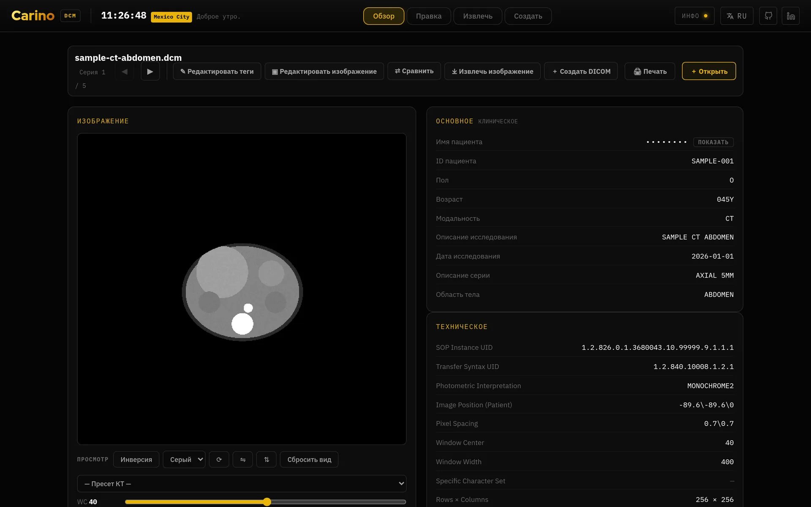
![Вкладка правки в редакторе: панель инструментов с кнопками «Анонимизировать (PS3.15)», «Параметры», «Вымышленный пациент (тестовые данные)», отмена и повтор, «+ Тег», JSON, CSV, «Печать», «Этот файл» и «Скачать всё»; полоса из пяти загруженных серий; фильтры по пациенту, исследованию, серии, изображению, оборудованию, UID и приватным тегам; сама таблица тегов, по строке на атрибут с номерами группы и элемента, описанием, VR и редактируемым значением; и в правой трети панель правки изображения — поворот, отражение, инверсия и закрашивание впечатанного текста, записываемые в сохранённые пиксели — над предпросмотром, свёрнутым значением окна/уровня и областью для перетаскивания файлов.](../img/ru/editor-tags.webp)
Тестовый узел — одноразовый второй архив
Только петлевой адрес · pacs serve --dev-peer · никогда в поставляемой сборке
- Что делает
- Создаёт внутри этого же процесса целый второй архив — только на
127.0.0.1, со своим AE title, своими портами приёма и Query/Retrieve и своим хранилищем во временной папке, — а на этом узле сразу появляется назначение, нацеленное на него. Это настоящее место, куда исследованию есть куда уйти, пока вы проверяете, что пересылка, правило маршрутизации, обезличивание при пересылке или C-MOVE делают то, что вы думаете. Рядом создаётся выключенное назначение-«чёрная дыра»: включите его — и отправки начнут падать нарочно, а это и есть способ заполнить вкладку «Застряли» по требованию и увидеть, как выглядит затор, до того как он случится по-настоящему. - Как открыть
- Запустите движок с
pacs serve --dev-peer— он пишет об этом строкой ниже адреса панели, — затем выберите в боковой панели 🧪 Тестовый узел и нажмите Создать узел. Дальше панель показывает его AE title, оба порта, папку и сколько он принял. Без этого ключа строки просто нет, API отвечает 404, и никакая настройка вconfig.jsonеё не вернёт. Так и задумано: настройку может изменить любой, у кого есть токен панели, а до аргумента запуска по HTTP не дотянуться вовсе. - Кому можно
- Профилю, которому позволено создавать и удалять одноразовый тестовый архив. Из встроенных профилей это ИТ и администратор: доказать, где умирает пересылка, — работа стенда. Регистратуре и рентгенологу это не даётся: второй архив — инструмент стенда, а не клиники. И создание, и удаление записываются в журнал аудита.
- Что станет с тем, что он сохранил
- Уходит всё — и папка, и обе строки назначений на этом узле — когда вы нажимаете Удалить, когда процесс останавливается и при следующем запуске после аварийного завершения или отключения питания. Не остаётся ничего, и ровно ради этого им пользуются вместо того, чтобы написать вторую конфигурацию руками и забыть про папку. Одно стоит иметь в виду: удалите узел, пока против него ещё стоят отправки, — и этим отправкам будет некуда повторять; разберите их в разделе Исследований → Застряли.
Это инструмент стенда, и ключ запуска — то, что удерживает его в этой роли. Узел слушает только петлевой адрес, без исключений: тестовый архив, который могла бы найти модальность из сети, был бы вторым, никем не проверяемым хранилищем чьих-то снимков, и никто бы не заметил, что он там есть. Не передавайте этот ключ на узле с настоящими исследованиями. Настольная и контейнерная сборки никогда не передают его за вас.
7. Это не медицинское изделие
Carino DICOM не является медицинским изделием. Он не сертифицирован, не допущен и не зарегистрирован ни одним регулятором ни в одной стране. У него нет ни маркировки CE как медицинского изделия, ни допуска FDA, ни регистрации в ANVISA, COFEPRIS или любом равнозначном органе. Никто не проводил в отношении него валидацию клинического применения.
Он не предназначен для первичной диагностики. Диагностического просмотрщика здесь нет: ни оконного преобразования, ни измерений, ни калиброванной цепочки отображения, ни контроля над монитором, на котором он показан. Читайте исследования на валидированной рабочей станции, которая у вас уже есть.
Сказано прямо, потому что это полезнее сноски:
- Если вы его разворачиваете, валидация — ваша. Соответствие нормативным требованиям, оценка рисков, защита данных и клиническая ответственность лежат на организации, которая вводит его в эксплуатацию, а не на проекте.
- Он распространяется без каких-либо гарантий, как и сказано в его лицензии AGPL-3.0.
- Он не заменяет ни ваш PACS, ни вашу РИС. Он — шлюз между ними и то, что позволяет отделению работать во время аварии, пока они не вернутся.
- И всё же относитесь к нему как к клинической инфраструктуре. То, что он не медицинское изделие, не делает его безобидным: он перемещает данные пациентов. Шифрование тома, брандмауэр, TLS, токен и резервные копии обязательны.
- Если от него зависит помощь пациенту, ответственность за это ваша, а не этой программы.
Всё это не пессимизм. Проект всерьёз исходит из того, что изображение, которое молча так и не пришло, хуже, чем сбой, — поэтому он скорее откажется запускаться, будет явно считать неудавшиеся подоперации и отправит лишнее, чем недоотправит. Он придерживает доставку ровно в одном случае, громко и обратимо: назначение, для которого правило требует обезличивания, когда обещанную очистку выполнить нельзя, — потому что профиль выключен или потому что профиль включён, но деидентификатор построить не удалось. И он говорит, что именно из двух, потому что чинятся они по-разному. Но программа может отвечать только за то, что делает сама; остальное — на вас.
8. Лицензия и где получить помощь
Carino DICOM выпускается под AGPL-3.0-or-later. Поскольку это сетевой сервер,
применяется §13: если вы запускаете изменённую версию как сервис, вы обязаны предложить её
исходный код тем, кто им пользуется. Сохраняйте файл LICENSE и ссылку на исходный код
при любом изменённом развёртывании.
- Исходный код и трекер задач на GitHub
- Политика безопасности — что защищено, что нет и как сообщить об уязвимости
- Как внести вклад
Нашли ошибку в этом руководстве — или перевод, который врач-рентгенолог никогда не произнёс бы? Заведите issue. Руководства на русском, испанском, португальском и японском — часть проекта, а не дополнение.
Carino DICOM · главная страница · часть мастерской carino.systems · AGPL-3.0-or-later.